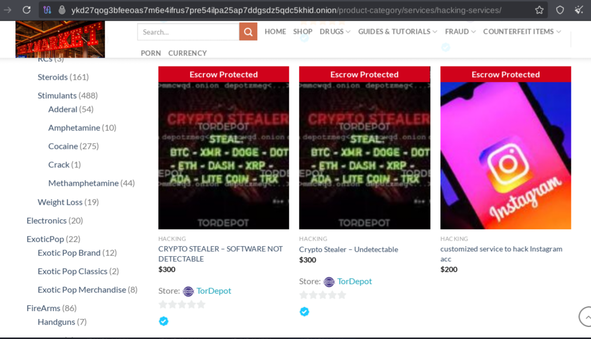
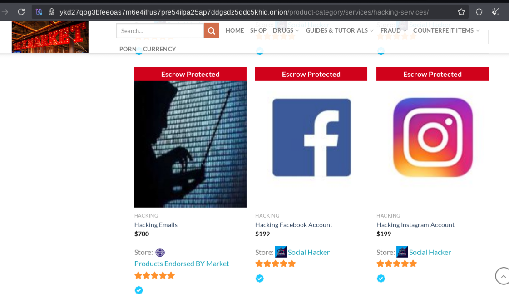

O que é a Deep e a Dark Web?
A Deep Web é a parte da internet que não é indexada por mecanismos de busca tradicionais como Google ou Bing. Já a Dark Web é uma pequena porção da Deep Web, acessada apenas com navegadores específicos como o Tor, e onde a privacidade e o anonimato são priorizados.
📜 História da Deep/Dark Web
A Deep Web surgiu naturalmente com o crescimento da internet, quando conteúdos passaram a ser protegidos por senhas ou armazenados em bancos de dados. A Dark Web, por sua vez, teve origem mais estruturada no início dos anos 2000.
O projeto Tor (The Onion Router) foi criado inicialmente pelo Laboratório de Pesquisas da Marinha dos EUA para proteger comunicações confidenciais. Em 2002, foi liberado como projeto de código aberto. Em 2006, nasce a The Tor Project, organização responsável pelo desenvolvimento contínuo do navegador Tor.
🎬 Documentários e Séries
- A Dark Web | Mercado Ilegal – Assistir
Mercados Ilegais na Dark Web
Mercados ilegais, também conhecidos como "dark markets", são plataformas online acessíveis através de redes anônimas como a Tor (The Onion Router). Nestes mercados, são comercializados produtos e serviços ilegais, como dados pessoais vazados, softwares maliciosos (malwares), ferramentas de hacking, documentos falsificados, drogas e até armas.
Como pesquisador de cibersegurança e entusiasta ético, é essencial compreender como esses mercados operam, quais tipos de ameaças estão sendo oferecidas e como isso pode impactar usuários e empresas. O conhecimento obtido através da observação e estudo desses ambientes permite identificar tendências de ataque e alertar pessoas e organizações sobre possíveis riscos.
Atenção: visitar esses mercados para fins educacionais e de pesquisa é tolerado em alguns contextos legais, desde que não envolva compra ou download de conteúdos ilícitos. Qualquer ação além da simples observação pode ser considerada crime.
No projeto CyberSecOnline, buscamos estudar esses ambientes para entender melhor as ameaças emergentes e desenvolver estratégias de conscientização e proteção digital.
🔍 Buscadores na Dark Web
Buscadores como Google não funcionam na Dark Web. Abaixo estão opções especializadas:
- Ahmia – ahmia.onion
- Phobos – phobos.onion
- DuckDuckGo na Dark Web – duckduckgo.onion
🔐 Dicas de Segurança ao Acessar a Dark Web
- Use sempre uma VPN antes de abrir o Tor Browser.
- Configure o Tor com bridges e nível de segurança alto.
- Desative JavaScript no Tor para evitar rastreamento.
- Navegue com a janela do Tor minimizada (previne fingerprint).
- Evite logar em contas pessoais ou fornecer informações reais.
- Utilize sistemas isolados ou em máquinas virtuais.
- Faça buscas sempre em inglês para melhores resultados.
- Jamais baixe arquivos ou clique em links suspeitos.
🧠 Curiosidades
- A maioria da Deep Web é composta por bancos de dados acadêmicos e empresariais.
- O nome “onion” vem da estrutura de camadas de criptografia do Tor.
- Mercados como AlphaBay e Silk Road movimentaram milhões de dólares antes de serem desativados.
✅ 2. Verificar se seus dados estão na Dark Web manualmente (acesso avançado)
⚠️ Necessário: uso responsável, conhecimento técnico, e acesso a ambientes seguros (ex: Kali Linux com VPN e Tor).
🛠️ Ferramentas e recursos:
- Tor Browser → para acessar .onion (domínios da dark web).
- DuckDuckGo on Tor → usar buscadores com palavras-chave como:
"email@example.com" filetype:txt
"seu_nome" site:.onion
🧠 Sites .onion com leaks (exemplos):
(⚠️ apenas para aprendizado, jamais use para fins ilegais)
- Daniel Onion Link List
- OnionLand Search
- Breach Forums (foi fechado, mas reaparece com outros nomes)
- HUNTER (buscador de dumps)